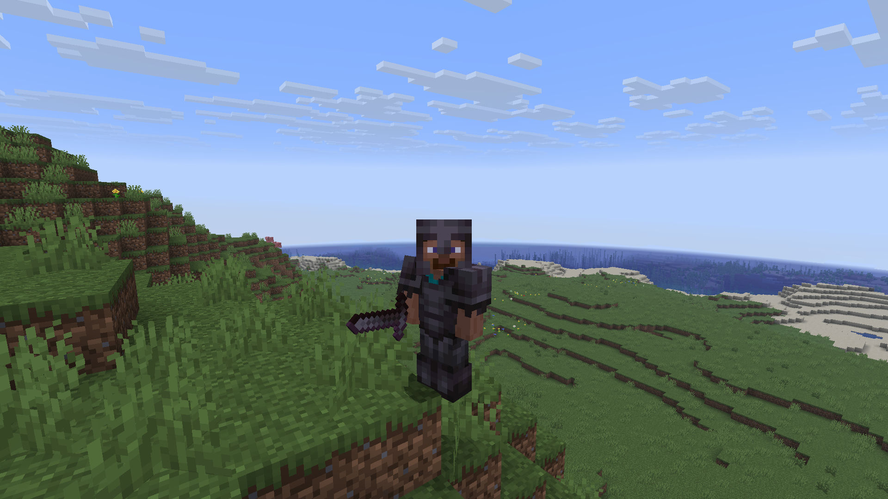
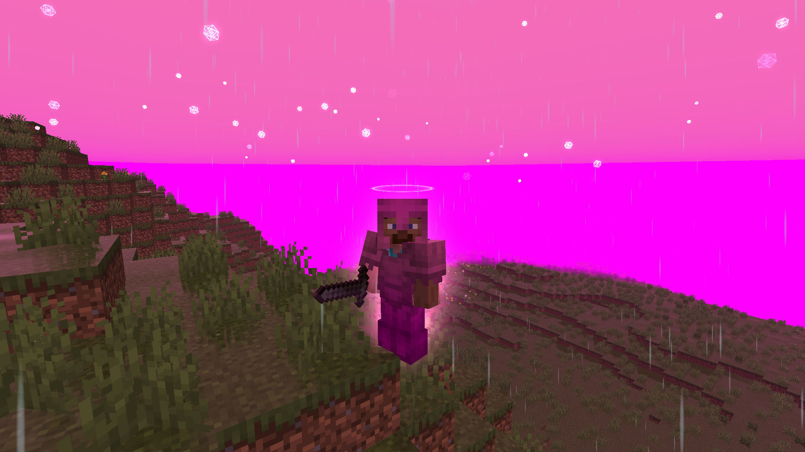

Небо
Красивое переливание. Много выбора
Лаунчер Minecraft с готовым визуалом: кастомное небо, мягкий свет и живая вода. Скачали установщик, нажали «Играть» — и привычный мир выглядит так, как вы его представляли.
Мы не перекрашиваем картинку одним слоем. Небо, свет и вода работают вместе — поэтому мир выглядит цельным.
Красивое переливание. Много выбора
Мягкие, тёплые закаты и аккуратные тени. FullBright и др.
Глубина на горизонте: дальние горы растворяются в дымке, а не обрываются в пустоту. Любой цвет и дальность.
Частицы в воздухе, светлячки ночью. Атмосфера, которая не мешает играть.
Автоустановка Fabric и Sodium. Собирать моды руками не нужно — все скачивается само.
ВСЕГО ПАРУ КЛИКОВОдин и тот же мир и один и тот же кадр. Потяните ползунок: слева — игра без Reveal, справа — с ним.


До ПослеНастройки визуала одним конфигов: скачайте файл и закиньте его в папку конфигов визуала.
Хороший оптимизированный кфг. by Zombi
Файл кладётся в %appdata%\.revealvisual\game\config\revealvisuals\presets. Лаунчер подхватывает его при следующем запуске.
Без ключей, аккаунта и ручной установки модов. Скачали установщик, выбрали версию, нажали «Играть» — визуал уже включён.
137 МБ. Лаунчер ставится в свою папку и не трогает вашу сборку.
Fabric и Sodium лаунчер поставит сам — руками ничего кидать не нужно.
Визуал включён по умолчанию.
Лаунчер делается из своего кармана. Здесь нет оплаты, ключей, рекламы и телеметрии — только красивые визуалы.
Хотите помочь проекту? Расскажите о нём друзьям.
Лаунчер. Отдельная программа со своим установщиком: сама ставит Fabric и Sodium в отдельную папку .revealvisuals , скачивает нужные моды и запускает игру. Кидать файлы в .minecraft руками не нужно.
От 1.8.9 до 26.x.
Да. Лаунчер делает только приятное восприятие для вас. Для античитов это обычный клиент Minecraft без вмешательства в игру.
На встроенной графике — стабильные 200+. Sodium и оптимизация уже в сборке, поэтому такой FPS - база.
Нет. Ни ключа, ни регистрации в Reveal, ни привязки к железу. Нужен только ваш аккаунт Minecraft — тот, которым вы играете.
Удалите лаунчер и папку .revealvisuals в %appdata%. Игра сразу вернётся к ванильному виду, миры и настройки не пострадают.
Один установщик — и знакомый мир становится красивее.